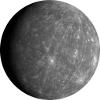
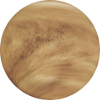
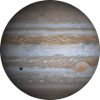
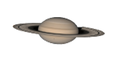
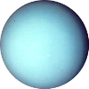
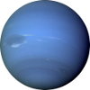

		<nav id="enlaces" class="enlaces">
			<h2>Enlaces principales</h2>
			<ul>
				<li><a href="index.shtml" title="Home">Home</a></li>					
				<li><a href="1960-1970.shtml" title="1960-1970">1960-1970</a></li>
				<li><a href="1970-1980.shtml" title="1970-1980">1970-1980</a></li>
				<li><a href="1980-2000.shtml" title="1980-2000">1980-2000</a></li>
				<li><a href="2000-2013.shtml" title="2000-2013">2000-2013</a></li>
			</ul>
			<h2>Listado de artículos</h2>
			<ul>
				<li><a href="index.shtml#planeta_rojo" title="Marte, El Planeta Rojo">Marte, "El Planeta Rojo"</a></li>					
				<li><a href="index.shtml#exploracion_marte" title="La exploración de Marte">La exploración de Marte</a></li>
				<li><a href="1960-1970.shtml#marsnik_1_2" title="Marsnik 1 y 2 (URSS)">Marsnik 1 y 2 (URSS)</a></li>
				<li><a href="1960-1970.shtml#sputnik_29" title="Sputnik 29 (URSS)">Sputnik 29 (URSS)</a></li>
				<li><a href="1960-1970.shtml#mars_1" title="Mars 1 (URSS)">Mars 1 (URSS)</a></li>
				<li><a href="1960-1970.shtml#sputnik_31" title="Sputnik 31 (URSS)">Sputnik 31 (URSS)</a></li>
				<li><a href="1960-1970.shtml#zond_1964a" title="Zond 1964 A (URSS)">Zond 1964 A (URSS)</a></li>
				<li><a href="1960-1970.shtml#mariner_3" title="Mariner 3 y 4 (EEUU)">Mariner 3 y 4 (EEUU)</a></li>
				<li><a href="1960-1970.shtml#zond_2_3" title="Zond 2 y 3 (URSS)">Zond 2 y 3 (URSS)</a></li>
				<li><a href="1960-1970.shtml#mariner_6_7" title="Mariner 6 y 7 (EEUU)">Mariner 6 y 7 (EEUU)</a></li>
				<li><a href="1960-1970.shtml#mars_1969_a_b" title="Mars 1969 A y B (URSS)">Mars 1969 A y B (URSS)</a></li>
				<li><a href="1970-1980.shtml#mariner_8_9" title="Mariner 8 y 9 (EEUU)">Mariner 8 y 9 (EEUU)</a></li>
				<li><a href="1970-1980.shtml#cosmos_419" title="Cosmos 419 (URSS)">Cosmos 419 (URSS)</a></li>
				<li><a href="1970-1980.shtml#mars_2_3" title="Mars 2 y 3 (URSS)">Mars 2 y 3 (URSS)</a></li>
				<li><a href="1970-1980.shtml#mars_4_5_6_7" title="Mars 4, 5, 6 y 7 (URSS)">Mars 4, 5, 6 y 7 (URSS)</a></li>
				<li><a href="1970-1980.shtml#viking_1_2" title="Viking 1 y 2 (EEUU)">Viking 1 y 2 (EEUU)</a></li>
				<li><a href="1980-2000.shtml#phobos_1_2" title="Phobos 1 y 2 (URSS)">Phobos 1 y 2 (URSS)</a></li>
				<li><a href="1980-2000.shtml#mars_observer" title="Mars Observer (EEUU)">Mars Observer (EEUU)</a></li>
				<li><a href="1980-2000.shtml#mars_global_surveyor" title="Mars Global Surveyor (EEUU)">Mars Global Surveyor (EEUU)</a></li>
				<li><a href="1980-2000.shtml#mars_96" title="Mars 96 (Rusia)">Mars 96 (Rusia)</a></li>
				<li><a href="1980-2000.shtml#mars_pathfinder" title="Mars Pathfinder (EEUU)">Mars Pathfinder (EEUU)</a></li>
				<li><a href="1980-2000.shtml#nozomi" title="Nozomi (Japón)">Nozomi (Japón)</a></li>
				<li><a href="1980-2000.shtml#mars_climate_orbiter_polar_lander" title="Mars Climate Orbiter y Mars Polar Lander (EEUU)">Mars Climate Orbiter y Mars Polar Lander (EEUU)</a></li>
				<li><a href="2000-2013.shtml#mars_odyssey" title="Mars Odyssey (EEUU)">Mars Odyssey (EEUU)</a></li>
				<li><a href="2000-2013.shtml#mars_express" title="Mars Express (ESA)">Mars Express (ESA)</a></li>
				<li><a href="2000-2013.shtml#mars_spirit_opportunity" title="Mars Exploration Rover: Spirit y Opportunity (EEUU)">Mars Exploration Rover: Spirit y Opportunity (EEUU)</a></li>
				<li><a href="2000-2013.shtml#mars_reconnaissance_orbiter" title="Mars Reconnaissance Orbiter (EEUU)">Mars Reconnaissance Orbiter (EEUU)</a></li>
				<li><a href="2000-2013.shtml#phoenix" title="Phoenix (EEUU)">Phoenix (EEUU)</a></li>
				<li><a href="2000-2013.shtml#dawn" title="Dawn (EEUU)">Dawn (EEUU)</a></li>
				<li><a href="2000-2013.shtml#fobos_grunt_yinghuo" title="Fobos-Grunt (Rusia) y Yinghuo 1 (China)">Fobos-Grunt (Rusia) y Yinghuo 1 (China)</a></li>
				<li><a href="2000-2013.shtml#mars_science_laboratory" title="Mars Science Laboratory (EEUU)">Mars Science Laboratory (EEUU)</a></li>
				<li><a href="2000-2013.shtml#mars_orbiter_mission" title="Mars Orbiter Mission (India)">Mars Orbiter Mission (India)</a></li>
				<li><a href="2000-2013.shtml#maven" title="MAVEN (EEUU)">MAVEN (EEUU)</a></li>				
			</ul>
			<h2>Opinión</h2>
			<ul>
				<li><a href="index.shtml#opinion" title="Comparte tu opinión">Comparte tu opinión</a></li>
			</ul>
			<h2>Acerca de esta Web</h2>
			<ul>
				<li><a href="index.shtml#pie_pagina" title="Acerca de esta Web">Acerca de esta Web</a></li>
			</ul>
			<h2>Enlaces externos</h2>
			<ul>
				<li><a href="http://www.esa.int/ESA" title="ESA (Agencia Espacial Europea)" hreflang="en" target="_blank">ESA</a></li>	
				<li><a href="http://www.nasa.gov/" title="NASA (Administración Nacional de la Aeronáutica y del Espacio)" hreflang="en" target="_blank">NASA</a></li>
				<li><a href="http://es.wikipedia.org/wiki/Marte_%28planeta%29" title="Marte en la Wikipedia" target="_blank">Marte en la Wiki</a></li>
			</ul>
			<h2>Otros planetas</h2>
			<ul>
				<li>
					<a href="http://es.wikipedia.org/wiki/Mercurio_%28planeta%29" title="Mercurio" target="_blank"></a>
					<p><a href="http://es.wikipedia.org/wiki/Mercurio_%28planeta%29" title="Mercurio" target="_blank">Mercurio</a></p>
				</li>
				<li>
					<a href="http://es.wikipedia.org/wiki/Venus_%28planeta%29" title="Venus" target="_blank"></a>
					<a href="http://es.wikipedia.org/wiki/Venus_%28planeta%29" title="Venus" target="_blank">Venus</a>
				</li>
				<li>
					<a href="http://es.wikipedia.org/wiki/J%C3%BApiter_%28planeta%29" title="Júpiter" target="_blank"></a>
					<p><a href="http://es.wikipedia.org/wiki/J%C3%BApiter_%28planeta%29" title="Júpiter" target="_blank">Júpiter</a></p>
				</li>
				<li>
					<a href="http://es.wikipedia.org/wiki/Saturno_%28planeta%29" title="Saturno" target="_blank"></a>
					<p><a href="http://es.wikipedia.org/wiki/Saturno_%28planeta%29" title="Saturno" target="_blank">Saturno</a></p>
				</li>
				<li>
					<a href="http://es.wikipedia.org/wiki/Urano_%28planeta%29" title="Urano" target="_blank"></a>
					<p><a href="http://es.wikipedia.org/wiki/Urano_%28planeta%29" title="Urano" target="_blank">Urano</a></p>
				</li>
				<li>
					<a href="http://es.wikipedia.org/wiki/Neptuno_%28planeta%29" title="Neptuno" target="_blank"></a>
					<p><a href="http://es.wikipedia.org/wiki/Neptuno_%28planeta%29" title="Neptuno" target="_blank">Neptuno</a></p>
				</li>				
			</ul>
		</nav>		
